ABOUT ME
I'm Lucía — a product designer who thinks in systems, works with her hands, and finds meaning at the intersection of craft, material, and function.

My practice is built around a simple belief: you design better when you understand how things are made.
I studied Industrial Design and finished my Master's with a thesis on material-driven product systems.
Based in Madrid. Available for product design projects, research collaborations, and strategic design work.
TOOLS & SKILLS
How I work & what sets me apart
I approach design as a decision-making process, not a purely formal exercise. I start by understanding context, identifying real tensions, and clearly defining the problem.
I don’t design isolated objects, but coherent systems where use, production, and meaning follow a clear logic.
My approach combines research, strategic thinking, and material exploration. I care as much about the why as the how: identifying opportunities and translating them into viable, manufacturable, and consistent solutions.
What sets me apart is synthesis. Reducing the unnecessary, clarifying what matters, and turning it into products that work well, are easy to understand, and integrate naturally into everyday life.
I aim for a balance between intuition and technical reasoning, between aesthetic sensitivity and production logic.
I don’t design to impose form, but to build meaning.
JOURNEY
Started Industrial Design — early focus on materials and making
Workshop “Córdoba i” — first approach to hands-on experimentation
First collaboration with a brand — introduction to real product constraints
Water & Sanitation Hackathon · 3D printing venture — applied fabrication and production
Thesis on material-driven product systems (V-Pin) · Teaching assistant (Technology III) · Freelance (HoldUp · SafeStep)
Advanced fabrication (composites) · Hands-on prototyping · Product + graphic design experience
Master’s in Product Design (Madrid) · Taller Los Hacedores · Freelance (Aurora · Kyrre Shift · Candela)
A BIT MORE OF ME
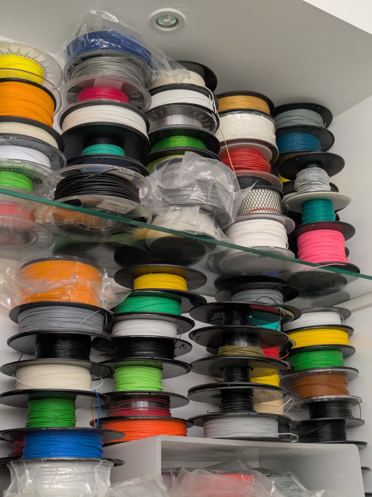
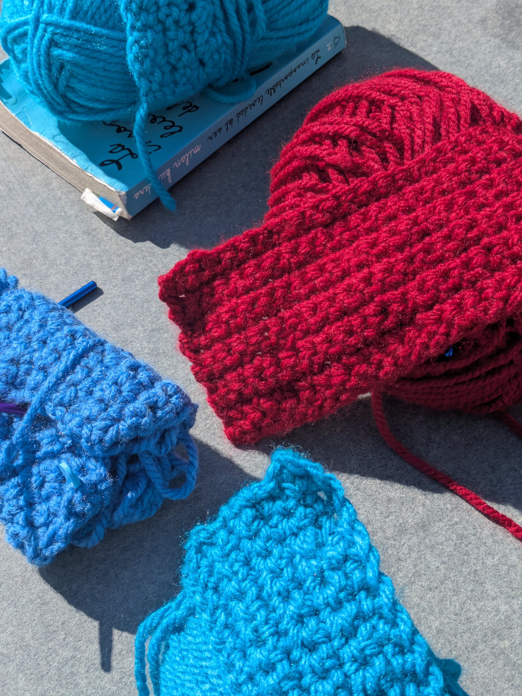
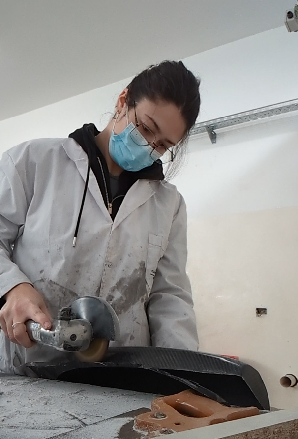
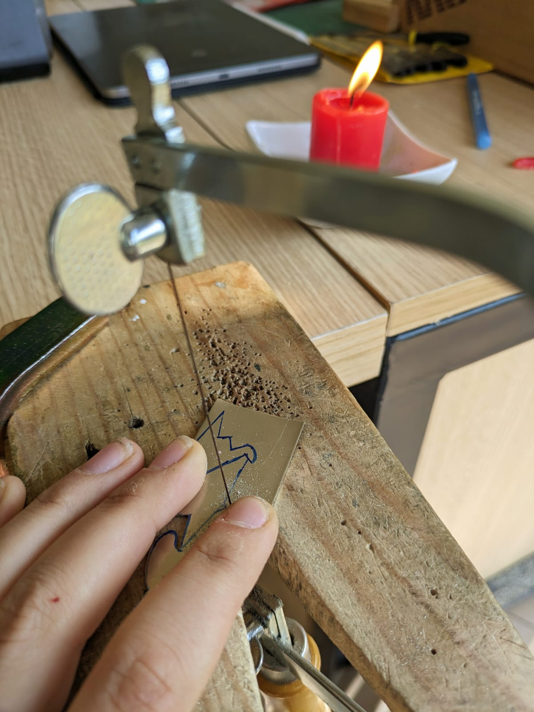

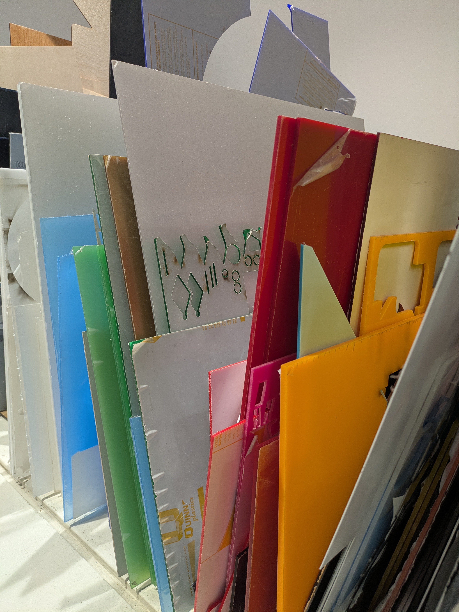
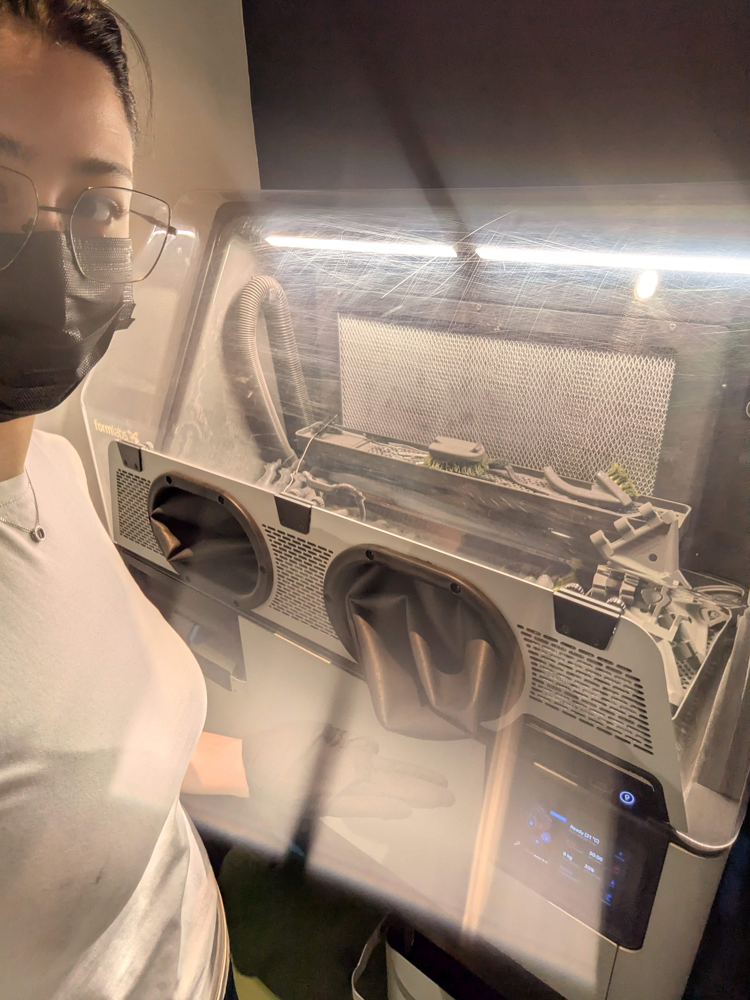
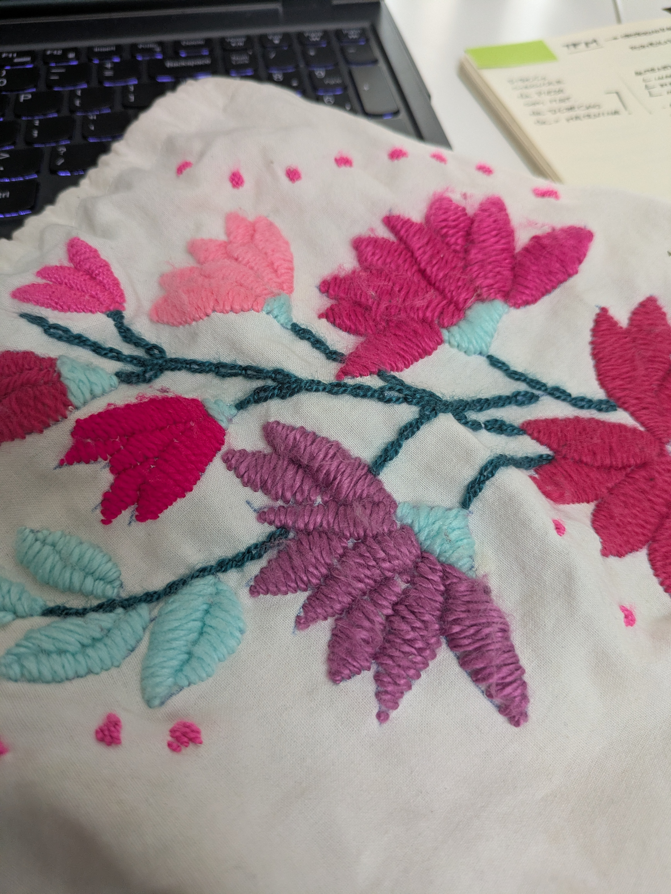
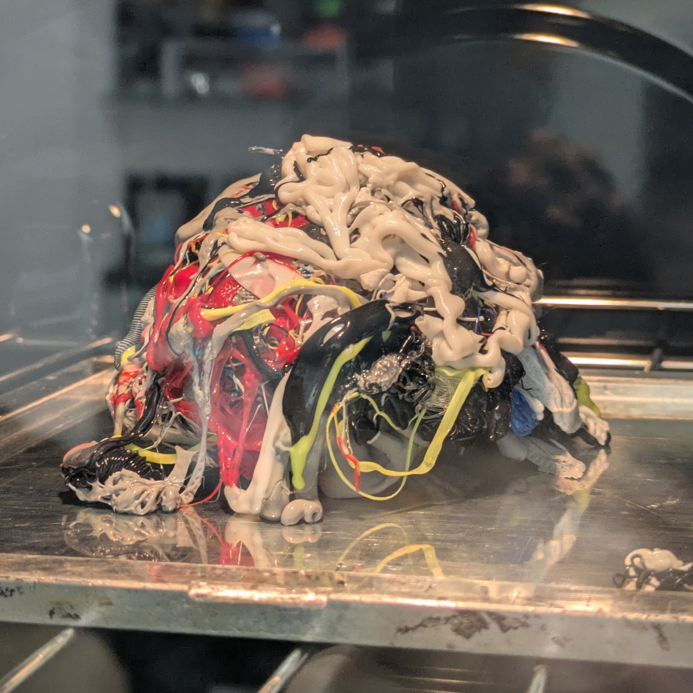
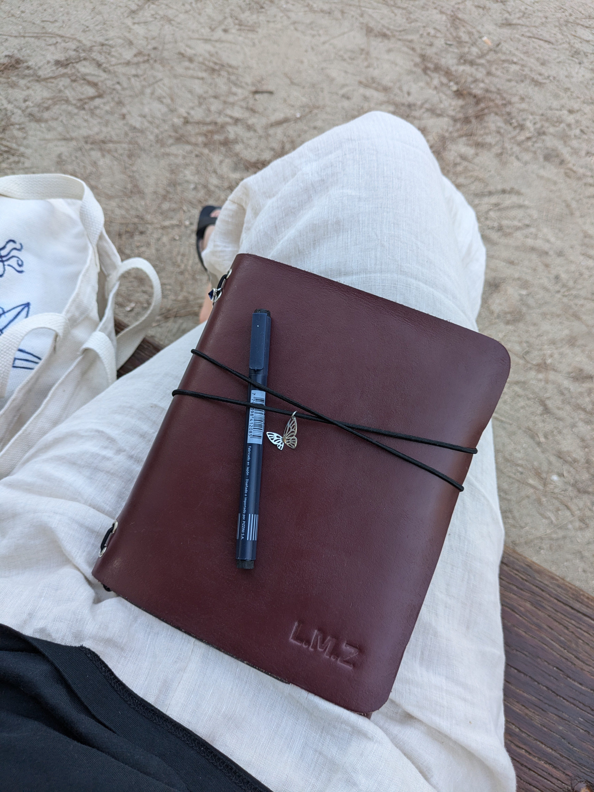
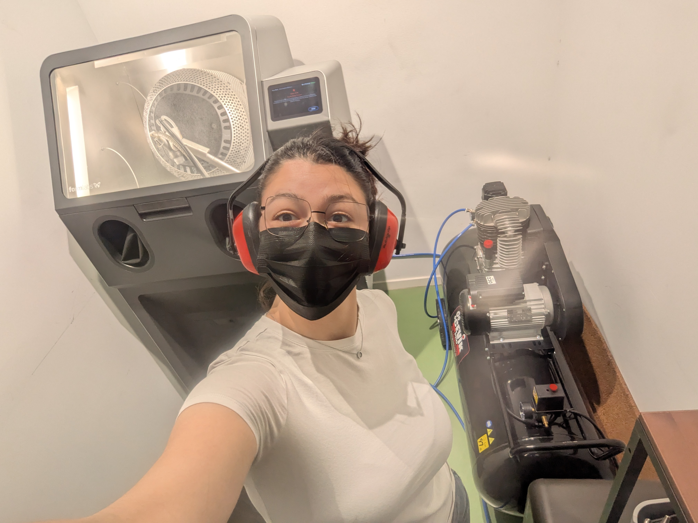
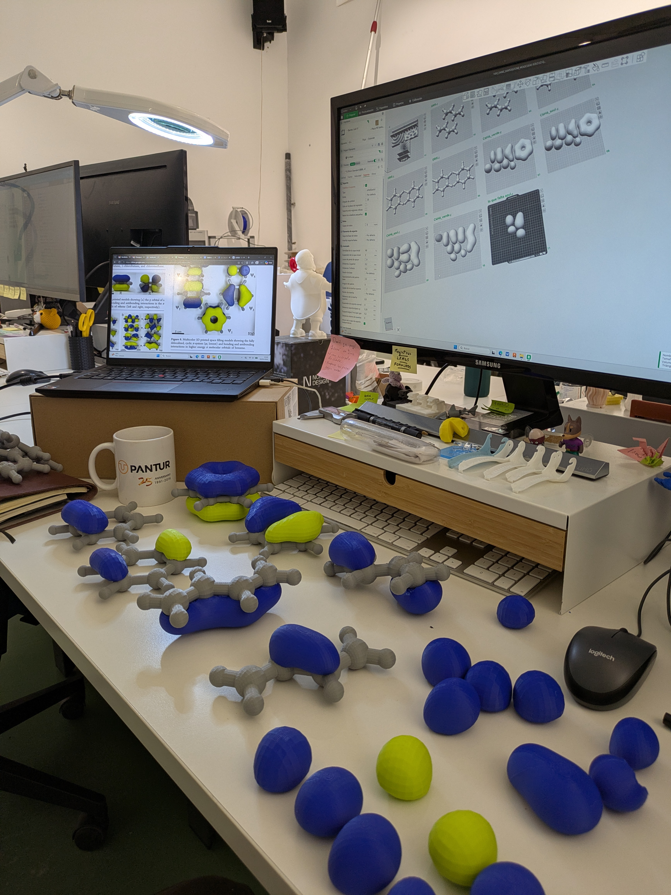

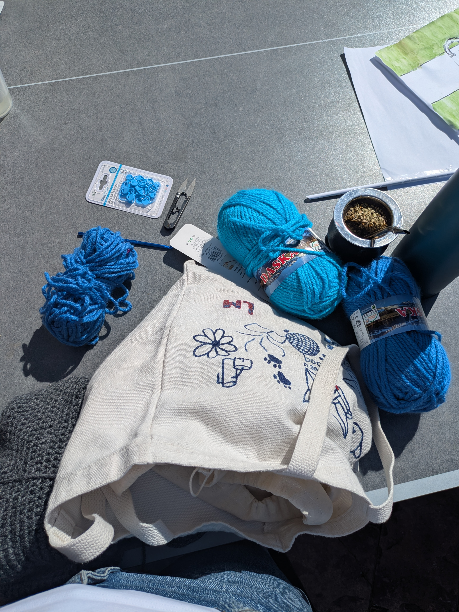
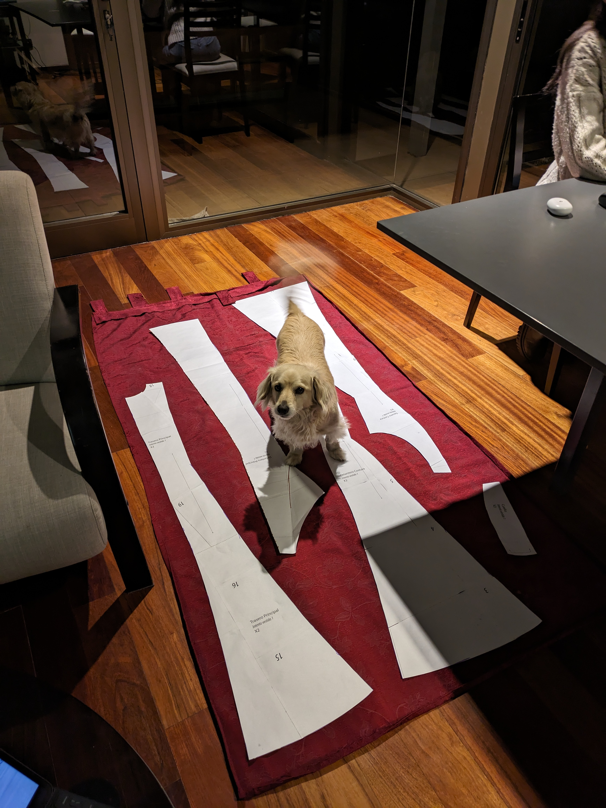
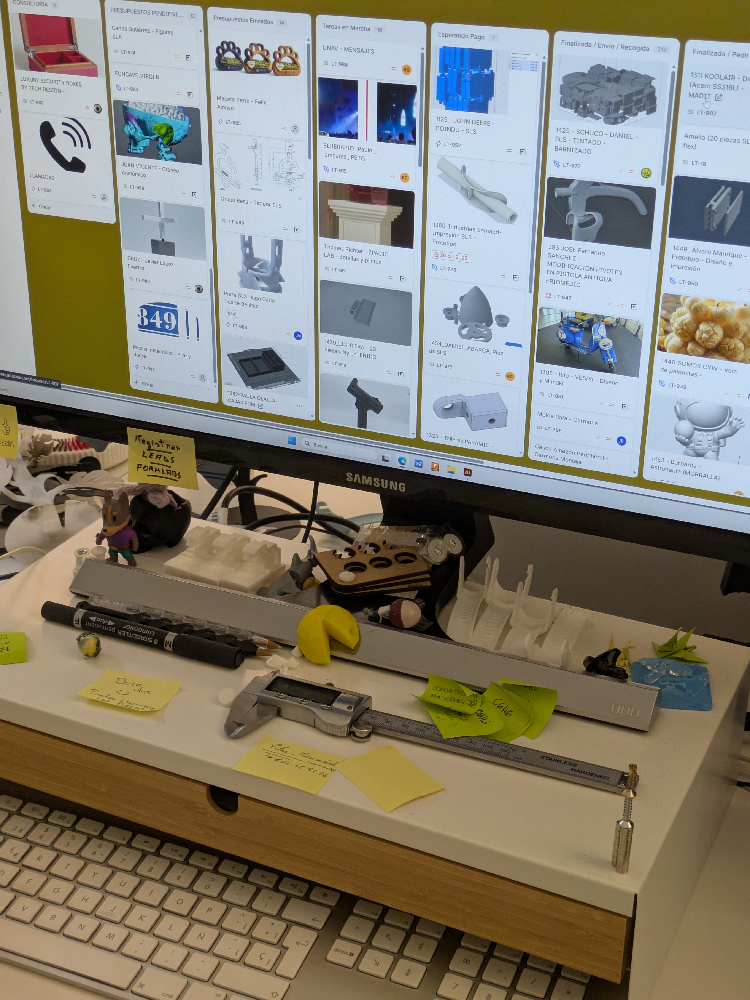